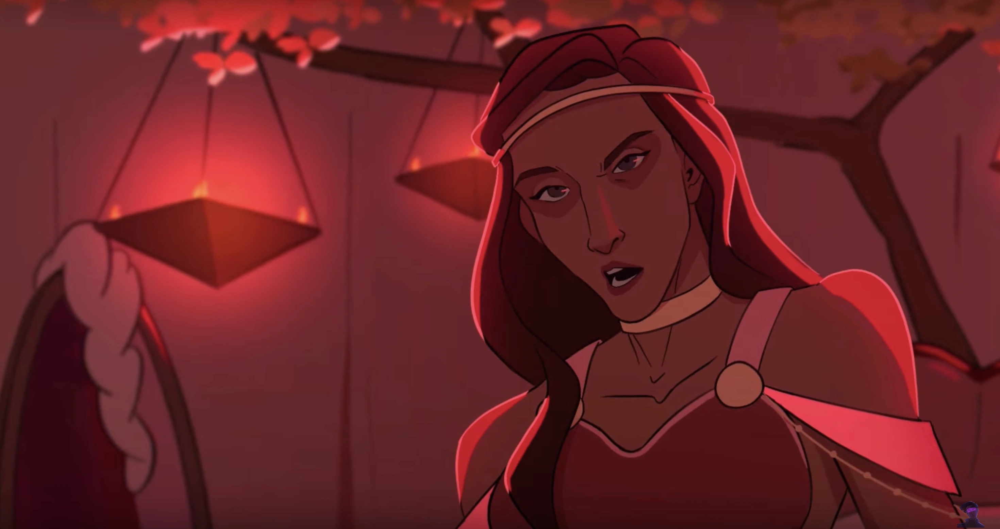

| Aphrodite | |
|---|---|
|  | |
| Zeichnung von Tododokii | |
| Biografie | |
| Titel | Göttin der Schönheit, Liebe und Verführung |
| Zugehörigkeit | Die Olympioniken |
| Familie | Die Olympioniken (Verwandte) |
| Ares (Geliebter) | |
| Status | Unsterblich |
| Hinter den Kulissen | |
| Auftritte | Weisheits Saga |
| Original Stimme | Janani K. Jha |
| Deutsche Stimme | Rolle offen |
Aphrodite
Lasst ihn die Schmerzen seiner Mutter doch mal fühlen, den Pein. - Aphrodite (Götter Spiele)
Aphrodite ist die Göttin der Schönheit, Liebe und Verführung. Sie ist eine der Olympioniken und die Geliebte von Ares. Sie dient als "Level 3" von von Zeus' Test für Athene in Götter Spiele in EPIC: the Musical.
Biografie
Aphrodite wird von Zeus eingeladen, Athene zu prüfen, um Odysseus vor Kalypso zu retten. In „Level 3“ der Götter Spiele forderte Aphrodite Athene heraus, indem sie behauptete, Odysseus habe seine Mutter an einem gebrochenen Herzen sterben lassen, als er es versäumte, den Zyklopen zu töten, und er solle mit Kalypso verrotten. Athene entgegnete, dass ein gebrochenes Herz wieder heilen kann und dass Odysseus über den Ozean reiste, um zu seiner Frau und seinem Haus zurückzukehren. Sie beschloss, ihn freizulassen.
Auftritte
Trivia
- Das Instrument von Aphrodite ist ein Saxophon, weil es mit einer „romantischen Konnotation“ verbunden ist.
- Wenn Aphrodite zu Beginn des ersten Animatics, in dem sie zu sehen ist, die Menge begrüßt, ruft sie zwei Tauben herbei, die eines ihrer vielen Symbole sind.
- In der Mythologie gibt es zwei Versionen der Geburt von Aphrodite: In der einen (von Homer bevorzugten) Version wird sie als göttliche Tochter des Zeus und der Dione bezeichnet, was sie zu einer direkten Verwandten der übrigen Olympioniken macht; in der anderen (von Hesiod bevorzugten) Version wird sie als eine Göttin beschrieben, die aus dem Meeresschaum geboren wurde, nachdem die Genitalien des Uranus ins Mittelmeer oder nach Thalassa gefallen waren, was sie (genealogisch) zur Tante von Zeus, Hera und Poseidon und zur Großtante der jüngeren Olympioniken, einschließlich Ares, machen würde.
- Während Homer in der Ilias Hephaistos als Ehemann von Aphrodite erwähnt, ist ihre Ehe scheinbar vorbei, denn die Frau des Schmiedegottes ist Charis (oder Aglaea, wie Hesiod sie nannte), eine kleinere Göttin der Schönheit und des Schmucks. Beide Geschichten stimmen darin überein, dass Aphrodite die Geliebte von Ares ist, und in Epic: Das Musical werden sie zusammen dargestellt.